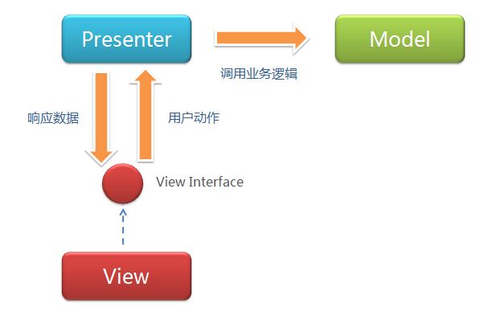

MVC和MVP模式都是为了解耦Model和View使数据代码和视图代码逻辑分离而演化出来的模式。在此之上MVP相比MVC，Presenter定义了视图和动作接口，使开发更为清晰。
一、原始MVC
原始MVC并非为了分离的目的出现。
二、MVC
View <-> Controller <-> Model
MV不再直接交互。
三、MVP

View <-> Presenter -> Model
P持有V和M的引用，可以控制View，也可以控制Modell。V持有P的引用，通过P操作M，比方点击事件。
和MVC的区别：
MVP深化了MVC中VC的交互协议，定义了Presenter和View之间的接口，让一些可以根据已有的接口协议去各自分别独立开发，以此去解决界面需求变化频繁的问题。
Model没持有P的引用，MVC中数据操作后回调Controller来更新View，MVP中Presenter操作完Model后更新View。
四、MVVM

VM采用双向绑定(data-binding): View的 变动，自动反映在View Model，反之亦然。这样开发者就不用处理接收事件和View更新的工作。只用处理数据。
http://www.jianshu.com/p/13c4894c5129 1. 在谈MVP之前，你真的懂MVC吗？
http://www.jianshu.com/p/50c7124f408e 2. MVP模式是你的救命稻草吗？
http://www.jianshu.com/p/7c4e310da409 3. 使用MVP模式重构代码
http://www.ruanyifeng.com/blog/2015/02/mvcmvp_mvvm.html 阮一峰 简单
http://www.cnblogs.com/indream/p/3602348.html 详细 历史